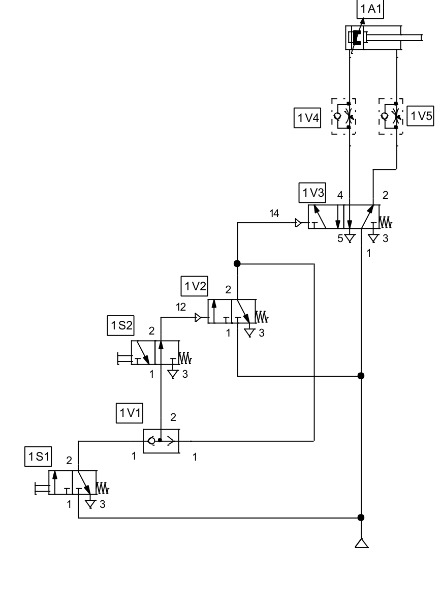

EBAU 2024 · Tecnología e Ingeniería II · Región de Murcia · Julio (Extraordinaria)
Examen de la Región de Murcia (Universidad de Murcia y UPCT), convocatoria extraordinaria de julio de 2024. Tres bloques con opcionalidad: Bloque I 2 de 4 cuestiones, Bloque II 1 de 2 ejercicios y Bloque III 2 de 3. Aquí se resuelven todos.
Bloque I · Cuestiones (2 de 4)
Propiedades y ensayos, diagrama de tracción de tres materiales, motor térmico de Carnot y motores MCIA de 2 tiempos.
Bloque II · Ejercicios (1 de 2)
Viga con voladizo (cortantes y momentos) y análisis de un circuito neumático con simbología normalizada.
📄 Enunciado
- Definir brevemente las propiedades mecánicas dureza y elasticidad. (0,25 p.)
- Indicar si existe algún ensayo para medir estas propiedades y explicar en qué consiste. (0,5 p.)
- Explicar el tratamiento térmico de recocido en aceros, qué factores influyen y cómo afecta a las propiedades del apartado a). (0,5 p.)
💡 ¿Qué vamos a aplicar?
Repasamos dureza y elasticidad, sus ensayos, y el recocido: un tratamiento de calentamiento y enfriamiento lento que ablanda el acero (opuesto al temple).
a) Dureza y elasticidad
- Dureza: resistencia de la superficie a ser rayada o penetrada (a la deformación plástica localizada).
- Elasticidad: capacidad de un material para recuperar su forma original al cesar la fuerza que lo deformaba (deformación reversible).
b) Ensayos
- Dureza: ensayos de penetración Brinell (bola), Vickers (pirámide de diamante) y Rockwell (lectura directa de la profundidad). Se mide la huella dejada por el penetrador bajo carga.
- Elasticidad: se determina con el ensayo de tracción, del que se obtiene el módulo de Young (E = σ/ε en la zona elástica), que cuantifica la rigidez elástica del material.
c) Recocido
El recocido consiste en calentar el acero (a temperatura de austenización o algo inferior según el tipo) y enfriarlo muy lentamente (normalmente en el propio horno).
Factores que influyen: temperatura alcanzada, tiempo de permanencia, velocidad de enfriamiento (muy lenta) y composición del acero.
Efecto en las propiedades: disminuye la dureza y la resistencia, elimina tensiones internas y aumenta la ductilidad y la tenacidad, mejorando la mecanizabilidad. Es el tratamiento opuesto al temple. La elasticidad (módulo E) apenas varía, pues depende de la naturaleza del material, no del tratamiento.
📄 Enunciado
- En la figura se representa el diagrama de tracción de tres materiales A, B y C. Razonar: (0,45 p.)
- a.1) ¿Qué material/es presenta comportamiento característico de los aceros?
- a.2) ¿Qué material tiene mayor resistencia mecánica?
- a.3) ¿Qué material tiene mayor tenacidad?
- Probeta de sección cuadrada de 20 mm de lado y 200 mm de longitud: deformación elástica hasta 18 kN, zona proporcional hasta 16 kN, módulo de Young 1·107 kPa, fuerza máxima de rotura 30 kN. Calcular: (0,8 p.)
- b.1) Tensión límite elástica y alargamiento máximo en la zona elástica proporcional.
- b.2) Tensión máxima de trabajo (n = 3 sobre la rotura) y alargamiento en rotura, sabiendo que εR = 5εP.
💡 ¿Qué vamos a aplicar?
La resistencia mecánica es la tensión máxima (altura del pico de la curva); la tenacidad es la energía absorbida hasta la rotura, proporcional al área bajo la curva. En los cálculos: \(\sigma=F/A\), \(A=l^2\), \(\varepsilon=\sigma/E\) y \(\Delta L=\varepsilon L_0\).
a) Análisis de las curvas
- a.1) Comportamiento de acero: los materiales A y B presentan un escalón de fluencia (zona de deformación a carga casi constante) típico de los aceros; C no lo presenta (curva suave). El más característico de un acero dúctil es A.
- a.2) Mayor resistencia mecánica: A, porque alcanza la mayor tensión (pico más alto de la curva).
- a.3) Mayor tenacidad: B, porque aunque su tensión máxima es menor que la de A, se deforma mucho más (mayor alargamiento) y por tanto encierra mayor área bajo la curva (más energía absorbida antes de romper).
b) Cálculos
Sección cuadrada y módulo de Young en unidades coherentes:
b.1) Tensión límite elástica y alargamiento en zona proporcional
b.2) Tensión de trabajo y alargamiento en rotura
Con \(\varepsilon_R=5\,\varepsilon_P=5\cdot0{,}004=0{,}02\):
📄 Enunciado
- Explicar el funcionamiento de un motor térmico según un ciclo ideal de Carnot y representarlo en un diagrama p–v. (0,75 p.)
- Definir el rendimiento del motor térmico según ese ciclo y evaluarlo para un motor que opera entre 150 °C y 800 °C. (0,5 p.)
💡 ¿Qué vamos a aplicar?
El ciclo de Carnot (motor) recorre dos isotermas y dos adiabáticas en sentido horario: absorbe calor Qc del foco caliente, produce trabajo y cede Qf al foco frío. Su rendimiento sólo depende de las temperaturas: \(\eta=1-\dfrac{T_f}{T_c}\) (en kelvin).
a) Ciclo de Carnot (motor térmico)
Un motor térmico de Carnot toma calor Qc de un foco caliente, transforma parte en trabajo W y cede el resto Qf a un foco frío. El ciclo (reversible) se recorre en sentido horario con cuatro transformaciones:
- Expansión isoterma a Tc: absorbe Qc del foco caliente.
- Expansión adiabática: el gas se expande y se enfría de Tc a Tf sin intercambiar calor.
- Compresión isoterma a Tf: cede Qf al foco frío.
- Compresión adiabática: se comprime y calienta de Tf a Tc.
b) Rendimiento
El rendimiento es la fracción del calor absorbido que se convierte en trabajo:
Con Tc = 800 °C = 1073 K y Tf = 150 °C = 423 K:
📄 Enunciado
- Explicar el funcionamiento de un motor de combustión interna alternativo (MCIA) de 2 tiempos (2T). (0,75 p.)
- Explicar las diferencias básicas entre un MCIA de 2 tiempos (2T) y de 4 tiempos (4T). (0,5 p.)
💡 ¿Qué vamos a aplicar?
En un motor de 2 tiempos el ciclo se completa en una sola vuelta del cigüeñal (dos carreras del pistón), combinando en cada carrera varias fases mediante las lumbreras.
a) Funcionamiento del MCIA de 2 tiempos
El ciclo se realiza en 2 carreras del pistón (una vuelta de cigüeñal). No hay válvulas: se usan lumbreras (admisión, transferencia y escape) que el propio pistón abre y cierra.
- 1.er tiempo (subida): el pistón sube comprimiendo la mezcla en la parte superior mientras, por debajo, aspira nueva mezcla al cárter. Al final salta la chispa (o se autoinflama).
- 2.o tiempo (bajada): la combustión empuja el pistón hacia abajo (trabajo); al descender, primero descubre la lumbrera de escape y luego la de transferencia, por la que la mezcla precomprimida en el cárter pasa al cilindro y barre los gases quemados.
Así, en cada vuelta hay una carrera motriz.
b) Diferencias 2T / 4T
| 2 tiempos (2T) | 4 tiempos (4T) | |
|---|---|---|
| Ciclo | 1 vuelta de cigüeñal (2 carreras) | 2 vueltas (4 carreras) |
| Carreras motrices | 1 por vuelta | 1 cada 2 vueltas |
| Admisión/escape | Por lumbreras | Por válvulas y árbol de levas |
| Potencia/peso | Mayor (más ligero y simple) | Menor |
| Consumo y emisiones | Peores (mezcla con aceite, pérdidas por barrido) | Mejores (más limpio y eficiente) |
📄 Enunciado
La viga de la figura forma parte de una estructura metálica. Para los datos indicados, calcular:
- Las reacciones en los apoyos. (0,5 p.)
- Las ecuaciones de cortantes y momentos flectores en cada tramo en función de x; indicar unidades y criterio de signos. (1,5 p.)
- Representar ambas ecuaciones e indicar en qué sección o tramo intermedio el momento flector es nulo. (0,5 p.)
💡 ¿Qué vamos a aplicar?
Equilibrio: \(\sum F_y=0\), \(\sum M=0\). Hay un voladizo de 1 m a la derecha del apoyo B con la carga P2. Criterio de signos: cortante positivo si las fuerzas a la izquierda van hacia arriba; momento positivo si tracciona la fibra inferior (cóncavo hacia arriba).
a) Reacciones
Momentos respecto de A (antihorario +), P1=20 kN en x=2, P2=10 kN en x=5, apoyo B en x=4:
b) Ecuaciones por tramos
Tramo A–1 (0 ≤ x ≤ 2):
En x=2: M = 15 kN·m.
Tramo 1–B (2 ≤ x ≤ 4):
En x=2: M=15; en x=4: M=−10 kN·m.
Tramo B–2 (4 ≤ x ≤ 5, voladizo):
En x=4: M=−10; en x=5: M=0 (extremo libre). ✓
c) Diagramas y momento nulo
Además de en los extremos, el momento flector se anula en el tramo intermedio 1–B: haciendo M = −12,5x + 40 = 0 ⇒ x = 3,2 m.
📄 Enunciado
Analizar el circuito neumático con simbología normalizada. Se pide:
- Identificar y describir: 1A1, 1V1, 1V2, 1V3, 1V4 y 1S1. (0,5 p.)
- Explicar el funcionamiento, la posición de reposo del cilindro (y por qué) y las condiciones para la carrera de extensión. (1,0 p.)
- Razonar si la retracción es automática al terminar la extensión o hay que actuar manualmente sobre alguna válvula. (0,5 p.)
- Calcular la fuerza neta de retracción en función del diámetro del émbolo: presión 8 bar(rel) en el lado del vástago (Ø 10 mm), contrapresión nula, rozamiento 15 %. (0,5 p.)

💡 ¿Qué vamos a aplicar?
En la retracción entra aire por la cámara del vástago, que actúa sobre el área anular \(A=\dfrac{\pi}{4}(D^2-d^2)\), con D el diámetro del émbolo y d el del vástago (10 mm). La fuerza efectiva es la teórica menos el rozamiento.
a) Identificación de componentes
- 1A1 — Cilindro de doble efecto (actuador).
- 1V1 — Válvula selectora (OR), función lógica O.
- 1V2 — Válvula 3/2 pilotada neumáticamente con retorno por muelle (elemento de mando).
- 1V3 — Distribuidor 5/2 (biestable con doble pilotaje) que gobierna el cilindro.
- 1V4 — Válvula reguladora de caudal unidireccional (estranguladora + antirretorno).
- 1S1 — Válvula 3/2 de accionamiento manual (pulsador) con retorno por muelle.
b) Funcionamiento y posición de reposo
La posición de reposo del cilindro es la retraída (vástago dentro): el distribuidor biestable 1V3 mantiene por memoria la última orden y, en la posición dibujada, alimenta la cámara del vástago. Para la carrera de extensión hay que pilotar 1V3 por su lado 14, señal que se obtiene combinando (a través de la selectora 1V1 y la válvula 1V2) la actuación de los pulsadores/finales de carrera 1S1 y 1S2. Al conmutar, el aire entra por la cámara del émbolo y el vástago avanza; la velocidad se regula con 1V4/1V5.
c) ¿Retracción automática?
Como el distribuidor 1V3 es biestable (con memoria), una vez extendido el cilindro permanece extendido: la retracción no es automática. Es necesario actuar manualmente (o mediante el final de carrera correspondiente) sobre la válvula que pilota 1V3 por el lado 12 para que conmute y se produzca la retracción.
d) Fuerza neta de retracción
En retracción actúa el área anular (émbolo Ø D menos vástago Ø d = 10 mm). Con p = 8 bar = 0,8 N/mm² y D en mm:
Descontando el rozamiento (15 % de la fuerza neta): \(F_{neta}=F_{teórica}-0{,}15\,F_{neta}\Rightarrow F_{neta}=F_{teórica}/1{,}15\):
📄 Enunciado
Circuito con v(t)=230√2·sen(320t) V, R=100 Ω, L=100 mH, Cf=50 µF y Cr regulable (en paralelo). Con Cr = 0 µF, calcular:
- Impedancia total; razonar si es inductivo o capacitivo; ángulo de desfase y factor de potencia. (1,0 p.)
- Intensidades eficaz, máxima e instantánea. (0,5 p.)
- Tensión eficaz en la bobina. (0,25 p.)
- Potencias aparente, activa y reactiva; diagrama fasorial. (0,5 p.)
- ¿Se puede llevar a resonancia? ¿Con qué Cr? (0,25 p.)
💡 ¿Qué vamos a aplicar?
Con Cr=0 sólo actúa Cf=50 µF. Con ω=320 rad/s: \(X_L=\omega L\), \(X_C=1/(\omega C)\), \(Z=\sqrt{R^2+(X_L-X_C)^2}\). En resonancia XL=XC; como los condensadores están en paralelo, Ctotal=Cf+Cr.
a) Impedancia, tipo, desfase y f.d.p.
Como \(X_C>X_L\), el circuito es capacitivo (la corriente adelanta a la tensión).
b) Intensidades
La corriente adelanta 17°:
c) Tensión en la bobina
d) Potencias y fasorial
e) Resonancia
Sí es posible: en resonancia \(X_L=X_C\Rightarrow \omega L=\dfrac{1}{\omega C_{total}}\), luego
Como \(C_{total}=C_f+C_r\):
📄 Enunciado
Control de una cinta transportadora con 4 entradas: transductores A₁, A₂ y pulsadores P₁, P₂. La salida F cumple: F=0 si P₁=P₂=0; F=1 si P₁=P₂=1; F=A₁ si P₁=1, P₂=0; y F=\(\overline{A_1+A_2}\) si P₁=0, P₂=1. Se pide:
- Tabla de verdad. (0,5 p.)
- Mapa de Karnaugh y función simplificada en producto de sumas (Maxterms). (1,0 p.)
- Circuito con el menor número de puertas NOR de dos entradas (ANSI-IEEE). (1,0 p.)
💡 ¿Qué vamos a aplicar?
Para POS se agrupan los ceros del mapa. La red de dos niveles NOR–NOR implementa directamente un producto de sumas (es la dual de la red NAND–NAND para suma de productos).
a) Tabla de verdad
Dec = 8·A₁+4·A₂+2·P₁+P₂. Según (P₁,P₂) se aplica la condición correspondiente:
| Dec | A₁ | A₂ | P₁ | P₂ | F |
|---|---|---|---|---|---|
| 0 | 0 | 0 | 0 | 0 | 0 |
| 1 | 0 | 0 | 0 | 1 | 1 |
| 2 | 0 | 0 | 1 | 0 | 0 |
| 3 | 0 | 0 | 1 | 1 | 1 |
| 4 | 0 | 1 | 0 | 0 | 0 |
| 5 | 0 | 1 | 0 | 1 | 0 |
| 6 | 0 | 1 | 1 | 0 | 0 |
| 7 | 0 | 1 | 1 | 1 | 1 |
| 8 | 1 | 0 | 0 | 0 | 0 |
| 9 | 1 | 0 | 0 | 1 | 0 |
| 10 | 1 | 0 | 1 | 0 | 1 |
| 11 | 1 | 0 | 1 | 1 | 1 |
| 12 | 1 | 1 | 0 | 0 | 0 |
| 13 | 1 | 1 | 0 | 1 | 0 |
| 14 | 1 | 1 | 1 | 0 | 1 |
| 15 | 1 | 1 | 1 | 1 | 1 |
Ceros de F: ∏(0,2,4,5,6,8,9,12,13).
b) Mapa de Karnaugh y POS
| A₁A₂ \ P₁P₂ | 00 | 01 | 11 | 10 |
|---|---|---|---|---|
| 00 | 0 | 1 | 1 | 0 |
| 01 | 0 | 0 | 1 | 0 |
| 11 | 0 | 0 | 1 | 1 |
| 10 | 0 | 0 | 1 | 1 |
Agrupando los ceros obtenemos cuatro términos suma:
- Columna P₁P₂=00 (ceros 0,4,8,12) → (P₁+P₂).
- Ceros 4,5,12,13 (A₂=1, P₁=0) → (P₁+A₂').
- Ceros 8,9,12,13 (A₁=1, P₁=0) → (P₁+A₁').
- Ceros 2,6 (A₁=0, P₁=1, P₂=0) → (A₁+P₁'+P₂).
Que puede compactarse como \(F=(P_1+\overline{A_1}\,\overline{A_2}\,P_2)(A_1+\overline{P_1}+P_2)\); en suma de productos equivale a \(F=A_1P_1+P_1P_2+\overline{A_1}\,\overline{A_2}\,P_2\).
c) Circuito con puertas NOR de 2 entradas
Un producto de sumas se realiza con una red NOR–NOR de dos niveles: en el primer nivel, una puerta NOR por cada término suma (su salida es el término suma negado, Sk'); en el segundo nivel, una NOR que combina esas salidas y entrega F (pues \(\overline{S_1'+S_2'+\dots}=S_1 S_2\cdots\)). Los literales negados (A₁', A₂', P₁') se obtienen con inversores (NOR de entradas unidas). Los términos de 3 literales se descomponen en puertas de 2 entradas.
📄 Enunciado
Sistema de control de la temperatura de un depósito (diagrama de bloques de la figura). Se pide:
- Función de transferencia del segundo lazo (interno) C(s)/R₁(s). (0,75 p.)
- Función de transferencia del sistema C(s)/R(s). (0,75 p.)
- Particularizar con G₁=2, G₂=1/(s+2), G₃=1/(s+1), H₁=1/s. (0,5 p.)
- Orden del sistema y estabilidad por el criterio de Routh. (0,5 p.)
💡 ¿Qué vamos a aplicar?
Aquí H1 realimenta el lazo interno (entra en el sumador b, negativo) y la salida C se realimenta de forma unitaria al sumador a (externo, negativo). Reducimos primero el lazo interno \(\dfrac{G_2G_3}{1+G_2G_3H_1}\) y luego el externo con realimentación unitaria.
a) Lazo interno C(s)/R₁(s)
Rama directa G₂G₃ con realimentación H₁ negativa:
b) Sistema completo C(s)/R(s)
Sea M = G₂G₃/(1+G₂G₃H₁). La cadena directa es G₁·M con realimentación unitaria negativa:
c) Particularización
Con G₁=2, G₂=1/(s+2), G₃=1/(s+1), H₁=1/s:
Multiplicando numerador y denominador por \(s(s+1)(s+2)\):
d) Orden y estabilidad (Routh)
Denominador de grado 3 → sistema de 3.er orden. Ecuación característica \(s^3+3s^2+4s+1=0\):
| s³ | 1 | 4 |
|---|---|---|
| s² | 3 | 1 |
| s¹ | b₁ = (3·4 − 1·1)/3 = 11/3 ≈ 3,67 | 0 |
| s⁰ | 1 |
La primera columna (1; 3; 3,67; 1) es toda positiva: no hay cambios de signo.